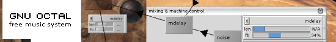

|  |
| Download --- Discuss --- OX_API Documentation --- Developer Community --- Links |
|
Feb 2003. The transition to GNU Objc is proceeding smoothly. The nightly CVS should start compiling soon, and the currently-out-of-date API docs will get revised shortly after that. In the meantime, here are some interesting links to projects and standards that have influenced Octal's direction:
Octal in GNU CVS. The following commands will check out the latest development version:
cvs -d:pserver:anoncvs@subversions.gnu.org:/cvsroot/octal login cvs -z3 -d:pserver:anoncvs@subversions.gnu.org:/cvsroot/octal co octal About the project. GNU Octal is intended to be an integrated electronic music workstation. It consists of:
© 2003 by David O'Toole (dto@gnu.org) Verbatim copying and distribution of this entire article is permitted in any medium, provided this notice is preserved. Return to GNU's home page. Please send FSF & GNU inquiries & questions to gnu@gnu.org. There are also other ways to contact the FSF. Please send comments on these web pages to webmasters@gnu.org, send other questions to gnu@gnu.org. Copyright notice above. Free Software Foundation, Inc., 59 Temple Place - Suite 330, Boston, MA 02111, USA. |